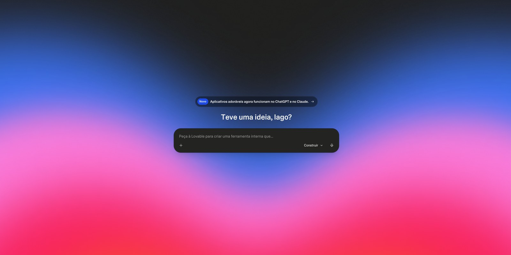
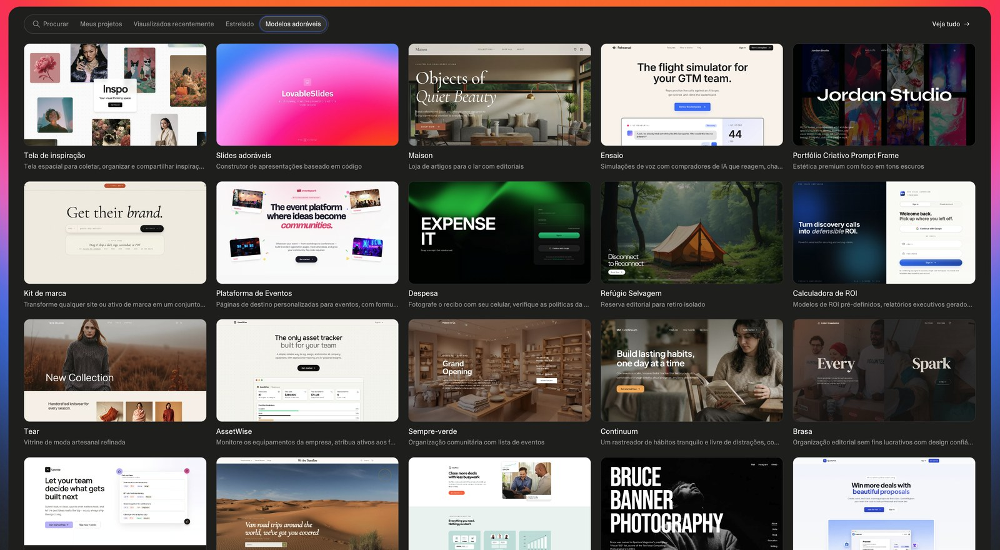
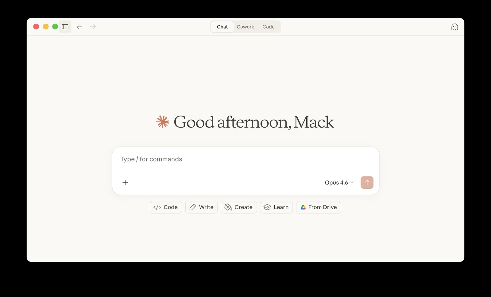

🎯 O que você vai ter no final
Um sistema web funcional (não só um site): cadastro de produtos, controle de estoque, registro de vendas e um painel com os números — rodando no ar num endereço .lovable.app, que você abre do celular ou do computador e usa no dia a dia.
Vamos usar o Lovable Cloud: o banco de dados e o login já vêm embutidos, sem você criar conta em nenhum outro lugar. Quando o Lovable perguntar, é só ativar — e pronto, você nem pensa nisso de novo. (Existe a opção de usar um Supabase por fora, mas isso é mais avançado; deixei pro final.)
Antes de tudo — o que você precisa
Quase nada, e nenhum conhecimento técnico:
- Um computador com internet.
- Zero programação. Você descreve o que quer; o Lovable escreve o código.
- Uma conta grátis no Lovable. O plano grátis te dá alguns créditos por dia, renovados todo dia — dá pra ir montando e melhorando seu sistema aos poucos, de graça.
- Uma IA pra te ajudar a escrever o pedido — o ChatGPT ou o Claude servem bem (o plano grátis já dá conta).
- (Opcional) um domínio próprio. No Lovable, ligar domínio próprio exige plano pago. Pra começar, o endereço grátis
.lovable.appjá resolve.
Existem várias formas de criar um sistema
Este tutorial usa IA (Lovable). Mas é justo conhecer as alternativas — cada uma serve pra um caso. Veja os prós e contras:
Outros construtores com IA (Bolt, Replit, v0)
Prós
- Também é "vibe coding"
- Rápidos pra prototipar
Contras
- Cada um tem suas manias
- Banco + login prontos não vêm tão "de fábrica"
No-code visual (Bubble)
Prós
- Arrasta-e-solta, poderoso
- Controle fino da lógica
Contras
- Curva de aprendizado real
- Você monta cada regra na mão
Lovable
este tutorialPrós
- Você descreve em português, ele constrói o app inteiro
- Banco e login já embutidos (Cloud)
- Publica num clique
Contras
- Créditos grátis limitados por dia
- Domínio próprio é pago
Os termos, rapidinho
Quatro palavras que vão aparecer. Em 30 segundos você entende:
Você + uma IA
montam o pedido (o prompt)
Lovable constrói
telas, banco e login
Você publica
no ar, num clique
Conhecendo o Lovable
Trinta segundos pra entender a ferramenta antes de pôr a mão na massa. O Lovable é um chat em linguagem natural: você escreve, em português, o que quer — e ele constrói o app na hora, mostrando o resultado ao lado. Sem menu complicado; é conversa.

Tem um detalhe que muda o jogo: cada pedido feito aqui gasta crédito. Por isso o nosso passo 1 não é aqui dentro — é montar o pedido caprichado numa outra IA (o ChatGPT ou o Claude, a que você preferir) e só colar o texto pronto no Lovable. Você chega com tudo mastigado e gasta menos crédito.
E não precisa partir do zero: o Lovable tem uma galeria de modelos prontos — os "Modelos adoráveis" — pra você se inspirar ou usar como ponto de partida.

Monte o pedido com ajuda de uma IA
Este é o começo. Escrever o pedido inteiro do zero dá trabalho — então deixa uma IA fazer o rascunho com você. Abra o ChatGPT, o Claude ou a que você preferir, cole o modelo abaixo e responda o que ela perguntar. No fim, ela te devolve um texto pronto pra copiar e colar no Lovable.

Me ajude a montar o pedido de um SISTEMA WEB completo e
funcional. Faça perguntas se faltar algo e no final me
entregue um texto pronto pra colar no Lovable.
O QUE O SISTEMA FAZ
- Nome do sistema: [NOME]
- Pra quem é: [QUEM VAI USAR]
- Problema que resolve (1 frase): [PROBLEMA]
FUNCIONALIDADES (o que a pessoa faz nele)
- [FUNCIONALIDADE 1]
- [FUNCIONALIDADE 2]
- [FUNCIONALIDADE 3]
- [FUNCIONALIDADE 4]
DADOS (o que o sistema guarda)
- [COISA 1]: [campos, ex: nome, preço, quantidade]
- [COISA 2]: [campos]
TELAS
- [TELA 1, ex: painel inicial com resumo]
- [TELA 2]
- [TELA 3]
ACESSO
- Precisa de login? [Sim/Não]. Quem entra: [QUEM]
VISUAL
- Vibe: [ex: limpa e profissional]
- Cor principal: [COR]
- Responsivo (funciona no celular e no computador).O QUE O SISTEMA FAZ
- Nome: Guarda-Roupa (gestão da minha loja)
- Pra quem: eu e minha equipe da loja de roupas
- Problema: controlar estoque e vendas sem planilha
bagunçada
FUNCIONALIDADES
- Cadastrar produtos (nome, tamanho, cor, preço, foto)
- Controlar estoque (sobe quando entra, desce ao vender)
- Registrar vendas (escolher produtos, somar o total e
dar baixa no estoque)
- Ver um painel com: vendas do dia, produtos com
estoque baixo e os mais vendidos
DADOS
- Produtos: nome, categoria, tamanho, cor, preço,
quantidade em estoque, foto
- Vendas: data, itens vendidos, valor total, pagamento
TELAS
- Painel inicial com os números do dia
- Lista de produtos (com busca e filtro por categoria)
- Tela de nova venda (tipo um caixa/PDV)
- Relatório simples de vendas
ACESSO
- Sim, com login. Só eu e minha equipe entram.
VISUAL
- Vibe: limpa e profissional, fácil de usar no balcão
- Cor principal: verde-esmeralda
- Responsivo (uso no celular e no computador)Ela transforma sua ideia solta num pedido completo e organizado — e ainda te faz perguntas que você não tinha pensado. Você chega no Lovable com o texto pronto e o sistema já sai mais perto do que você quer.
Cole no Lovable e ative o Cloud
Entre em lovable.dev, crie a conta grátis e cole o pedido que você montou. Quando ele oferecer o Lovable Cloud, ative — é o que dá banco de dados e login sem você configurar nada. Em segundos, o app aparece pronto do lado.
O Lovable tem um modo de planejar: antes de sair fazendo, ele monta um plano do sistema pra você revisar e aprovar. Gasta mais créditos, mas em sistema maior evita retrabalho. Pra começar pequeno, pode ir direto ao build.
Vá ajustando conversando
Com o Cloud ligado, você não conecta banco nenhum — já está tudo lá. Não gostou de algo? É só falar, em português mesmo:
- "Deixa o botão de vender mais destacado."
- "Adiciona um campo de desconto na tela de venda."
- "Coloca uma busca na lista de produtos."
- "No painel, mostra o total vendido no mês."
Vá por partes — uma mudança por vez fica mais fácil de revisar e de voltar atrás se não gostar.
Cada pedido consome créditos, e o quanto varia: um ajuste pequeno gasta pouco; um pedido grande, que gera muita coisa de uma vez, pode consumir bem mais. Por isso vale pedir por partes e ser específico. Como os créditos renovam todo dia, se acabar é só continuar no dia seguinte — dá pra evoluir de graça, sem pressa.
Coloque no ar
No canto superior direito, clique em Publish. Pronto — seu sistema fica no ar em algumnome.lovable.app.
Manda o link pra sua equipe: cada um abre no próprio celular e já usa. Toda vez que você ajustar algo, é só publicar de novo.
Extras e caminhos avançados
Quando pegar o jeito, dá pra ir além. Nada disso é obrigatório:
› Domínio próprio. Trocar o .lovable.app por sistema.sualoja.com.br exige plano pago no Lovable (em Settings → Domains). Pra site/portfólio estático dá pra usar domínio de graça pelo Cloudflare — veja o outro tutorial —, mas pra um sistema com banco, o caminho é o plano pago.
› Supabase por fora. Se um dia quiser controle total do banco (SQL na mão, mais opções de login), dá pra sair do Lovable Cloud e usar seu próprio Supabase. Sendo honesto: é chato de fazer — eu mesmo tentei algumas vezes e travei. Só encare isso quando realmente precisar e com calma; pra quase todo caso, o Lovable Cloud resolve.
Dá pra conectar o projeto ao GitHub e editar o código no seu computador com o Claude Code; as mudanças sincronizam de volta com o Lovable. Duas vantagens: editar por fora assim não consome créditos do Lovable, e você ganha um fluxo de desenvolvimento profissional. É um passo mais técnico — vale quando o sistema cresce.
Foi com esse mesmo método — montar o pedido, construir, ajustar, publicar — que eu construí o SaldoMed, um app financeiro pra médicos autônomos, com login, banco e várias telas. Você começa numa loja de roupas; o teto é o que você conseguir descrever.
É isso. Você acabou de montar um sistema de verdade.
Funcional, no ar, e que cresce conforme você pede. Travou em algum passo? Me chama.
Meus contatos → ← Outros tutoriais